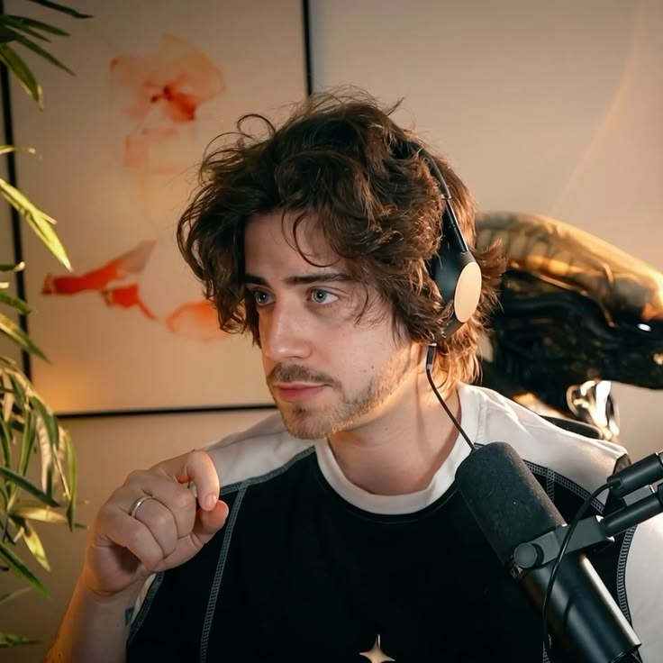
Cellbit
Diretor criativo de Enigma do Medo
Minha talvez inspiração de vida, uma pessoa que admiro e me inspiro em criatividade e comunicação.
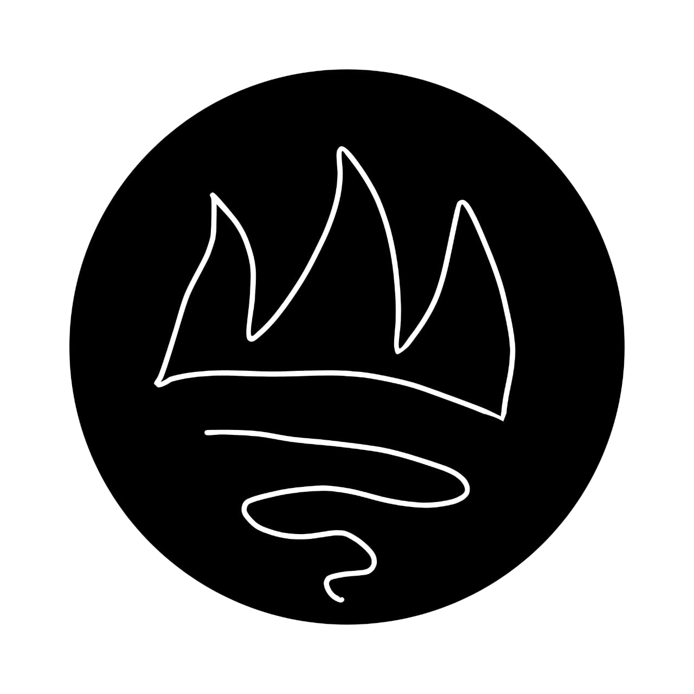
Karasa Dev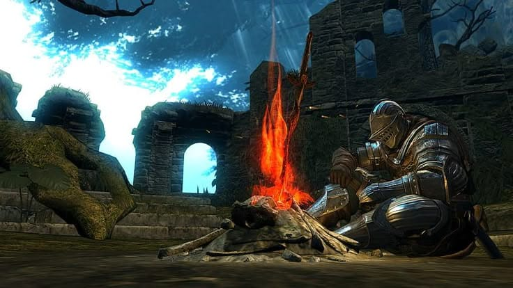
Olá, eu me chamo Karasa, a pronúncia fica ao seu critério, eu quero te contar um pouco sobre o meu universo mágico preferido... Os jogos!
Mas primeiro, devo me apresentar, eu sou um amante das artes, de todas elas, desenho, música, design, voz action, tudo. No meio das minhas crises para me descobrir eu achei uma resposta... eu quero me envolver com todas as artes, e onde eu consigo?... no mundo dos desenvolvedores de game!
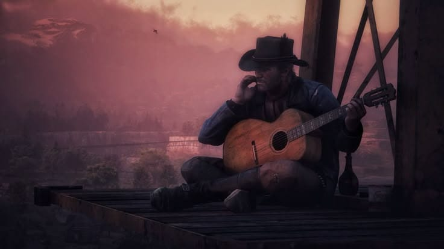
Ser um game dev para mim, é ser um artista.
Programar, arte de fazer palavras numa tela se mexerem, e ganharem vida, como nos filmes de fantasia.
É a conexão de todas as artes, é o caminho, e isso é lindo, por isso criadores de jogos independentes são tão consagrados e todos possuem quase uma assinatura, mesmo que através dos seus códigos, algo que uma IA jamais irá conseguir replicar, porque o doce está no processo.
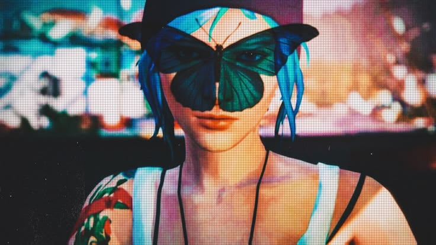
Apoiado sobre os ombros de gigantes

Diretor criativo de Enigma do Medo
Minha talvez inspiração de vida, uma pessoa que admiro e me inspiro em criatividade e comunicação.
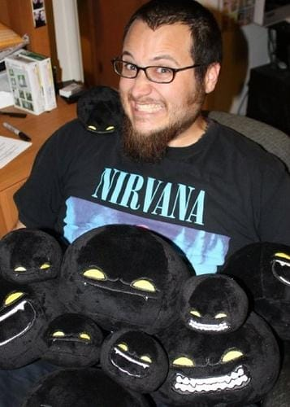
Criador solo de jogos como Super Meat Boy e Binding of Isaac
Um dos primeiros nisso, uma inspiração que segue ativo até hoje, um exemplo de sucesso e boa comunicação com os fãs.
Criador solo de Undertale e Deltarune
Talvez o maior desenvolvedor em popularidade, uma grande peça do cenário indie com os seus clássicos de gigantesco impacto.
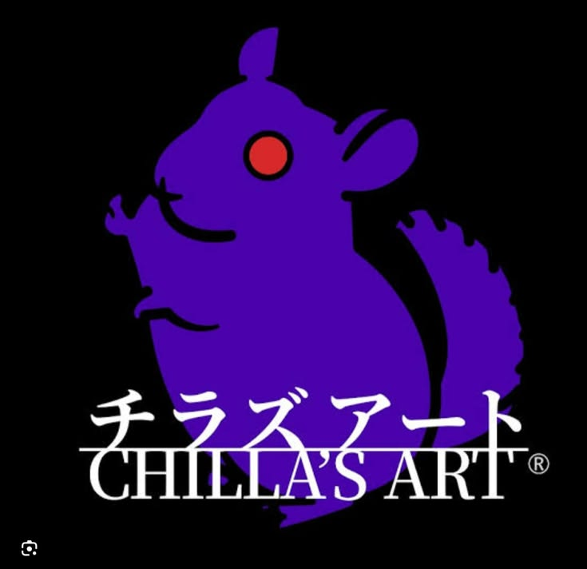
Criadora de Stay Out of the House, entre outros
Um pequeno grupo de devs asiáticos, exímios no uso do PSX como estética, criadores de todo um gênero.
Criador de Half-Life e da Steam
Talvez o maior empresário do mundo game indie, dono da maior plataforma de games para PC, um homem de princípios.
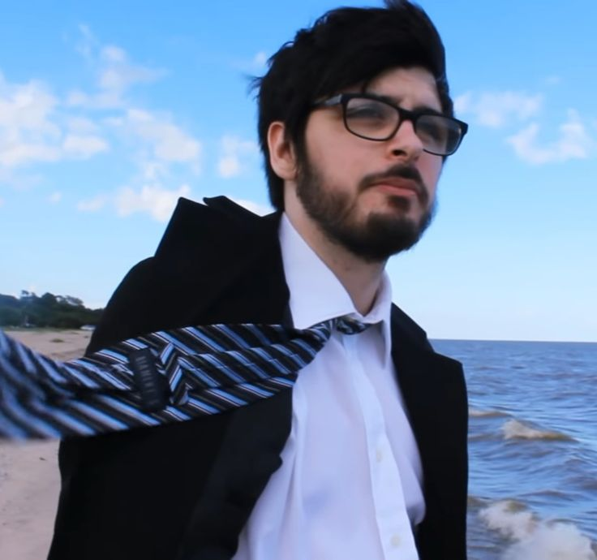
Criador de Chicken Jumper
Um amante do mundo game, assim como eu, um aspirante a game dev com outros mil interesses, um exemplo para mim não só nos jogos, mas na vida.
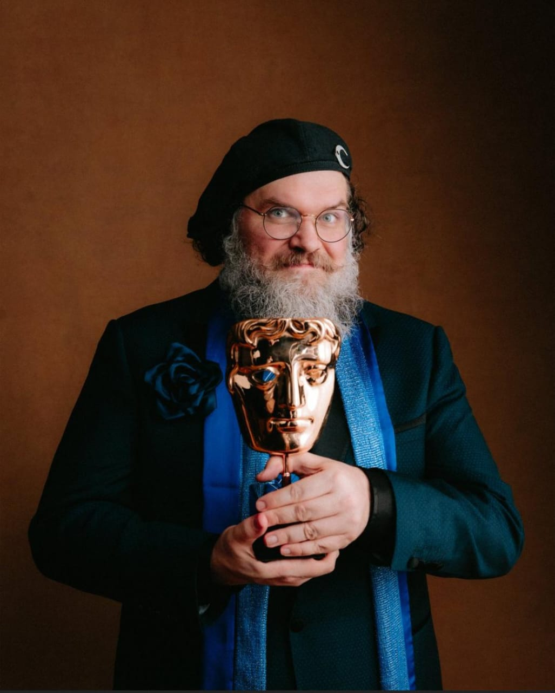
Criador de Blue Prince
Talvez o maior gênio da indústria indie atualmente, fez um único jogo por 8 anos, com puzzles absurdos, a maior obra de arte dos últimos tempos.
Minha paixão pelos jogos começou quando eu nem me entendia por gente, jogos de tabuleiro sempre me atraíram e quando eu encostei no primeiro jogo da cobrinha... ali eu vi um brilho!
Tive um console pirateado e desbloqueado que me fez sentir um pouco do gosto intenso que eu sinto até hoje quando passo horas jogando, foram bons tempos.
Depois de jogar tanto e assistir tanto, consumir tanto, posso me considerar um pato nesse rodeio, afinal, um pato sabe nadar, voar e andar, mas não faz nada tão bem, eu me encaixo nisso.
Sei pixel art, sei desenho, sei música, sei programar, sei sonorizar, mas o melhor que posso dizer é que tenho um infinito a melhorar.
Treino e resultado
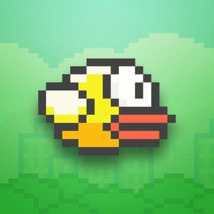
Tentando emular o jogo Flappy Bird.
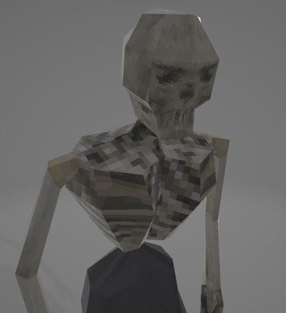
Brincando com modelagem.
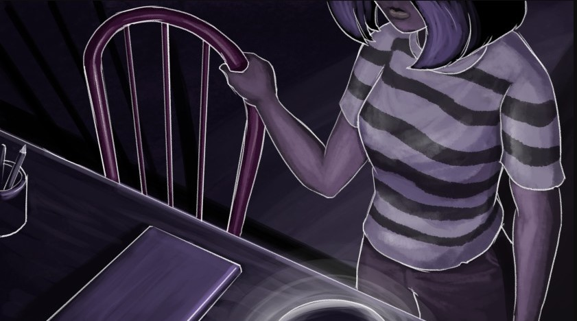
Baseado em Asleep, com a ajuda de outros devs.